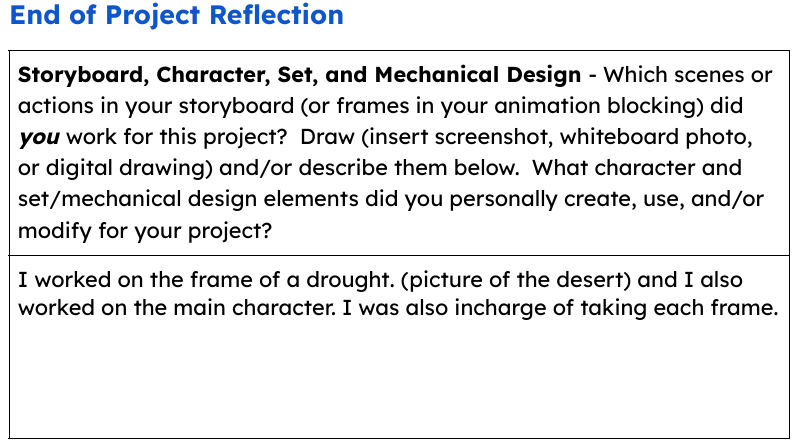
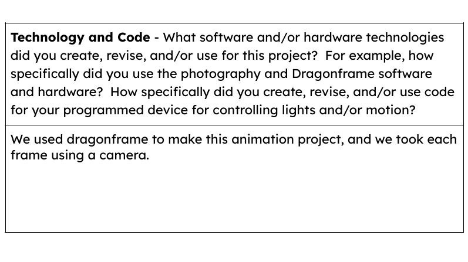
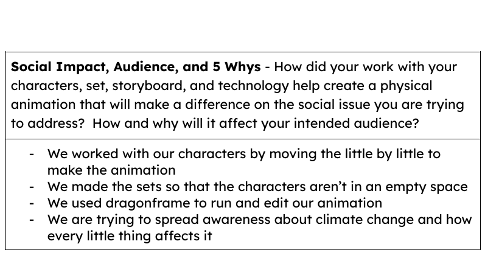

This image is of a loopy that shows how something small can affect the enviornment.

https://ncase.me/loopy/v1.1/?data=[[[3,440,250,0.5,%22Camping%22,0],[4,723,196,0.5,%22Campfire%22,0],[5,915,287,0.5,%22Fire%22,0],[6,762,508,0.5,%22Wildfire%22,0],[7,1017,454,0.5,%22Forest%2520Fire%22,0],[8,669,359,0.5,%22CO2%22,0],[9,510,520,0.5,%22Extinquished%22,0]],[[3,4,35,1,0],[4,5,39,1,0],[5,7,55,1,0],[7,6,19,1,0],[6,8,51,1,0],[6,9,37,-1,0],[9,3,124,1,0]],[[568,152,%22You%2520decide%2520to%2520build%250Aa%2520campfire.%22],[906,153,%22You%2520lose%2520attention%250Aand%2520wander%250Asomewhere%2520else.%250AMeanwhile%2520the%2520fire%250Ahas%2520spread%2520out.%22],[1110,308,%22The%2520fire%2520spreads%250Ato%2520the%2520forest%2520and%250Aburns%2520down%2520trees%252C%250Aplants%252C%2520and%2520animals.%22],[912,567,%22It%2520is%2520now%2520a%250Anational%2520emergency.%22],[822,375,%22It%2520releases%2520a%2520ton%2520of%250Acarbon%2520emissions.%22],[511,617,%22They%2520manage%2520to%250Astop%2520the%2520fire.%22],[241,389,%22You%2520go%2520back%2520camping%250Anot%2520caring%2520about%250Awhat%2520happened.%22]],10%5D
Our character is on ther way to school
Our character comes across a water bottle, after a moment he decides not to pick it up.
All of a sudden, the scene cuts to eviornmental issues such as droughts, rising sea levels, and forest fires.
The scene then cuts to the earth, the enviornment has been affected so much that it can take no more and breaks in half.
Our character wakes up and realizes that it was all just a nightmare.
Our chracter is on their way to school again(this time for real) and sees a water bottle on the floor, this time he decides to pick it up chnaging the outcome.
These are the characters that we used in our animation.(We really only used one of them).
This was one of the two sets and this one was to show that he was outside on his way to school.
This is the second set and it shows the charactrers bedroom where he woke up from his nightmare.
This image shows one of the results of the enviornmental crisis, being forest fires

This image shows another result of the enviornmental crisis, being rising sea levels
This image shows another result of the enviornmental crisis, being insect infestation
This image shows another result of the enviornmental crisis, being droughts
This image shows the Earth from outer space
This image shows the Earth breaking in half after all thats been going on
Images of my final work reflection
  Below is the code used to make this website
<!DOCTYPE html> <html lang="en"> <head> <meta charset="UTF-8"> <meta name="viewport" content="width=device-width, initial-scale=1.0"> <meta name="author" content="Abimael Velasco"> <title>Enviormental Issues</title> <link rel="stylesheet" href="style.css"> </head> <body> <h1>The Causes and Affects for Enviormental Issues.</h1> <p>This image is of a loopy that shows how something small can affect the enviornment.</p> <img src="Loopymodel.jpg" alt="Your Short Description of the Image" width="450"> <p>https://ncase.me/loopy/v1.1/?data=[[[3,440,250,0.5,%22Camping%22,0],[4,723,196,0.5,%22Campfire%22,0],[5,915,287,0.5,%22Fire%22,0],[6,762,508,0.5,%22Wildfire%22,0],[7,1017,454,0.5,%22Forest%2520Fire%22,0],[8,669,359,0.5,%22CO2%22,0],[9,510,520,0.5,%22Extinquished%22,0]],[[3,4,35,1,0],[4,5,39,1,0],[5,7,55,1,0],[7,6,19,1,0],[6,8,51,1,0],[6,9,37,-1,0],[9,3,124,1,0]],[[568,152,%22You%2520decide%2520to%2520build%250Aa%2520campfire.%22],[906,153,%22You%2520lose%2520attention%250Aand%2520wander%250Asomewhere%2520else.%250AMeanwhile%2520the%2520fire%250Ahas%2520spread%2520out.%22],[1110,308,%22The%2520fire%2520spreads%250Ato%2520the%2520forest%2520and%250Aburns%2520down%2520trees%252C%250Aplants%252C%2520and%2520animals.%22],[912,567,%22It%2520is%2520now%2520a%250Anational%2520emergency.%22],[822,375,%22It%2520releases%2520a%2520ton%2520of%250Acarbon%2520emissions.%22],[511,617,%22They%2520manage%2520to%250Astop%2520the%2520fire.%22],[241,389,%22You%2520go%2520back%2520camping%250Anot%2520caring%2520about%250Awhat%2520happened.%22]],10%5D</p> <h2>Storyboard</h2> <img src="storyboard1.jpg" alt="Our character is on ther way to school." width="450"> <p>Our character is on ther way to school</p> <img src="storyboard2.jpg" alt="He comes across a water bottle, but decides not to pick it up." width="450"> <p>Our character comes across a water bottle, after a moment he decides not to pick it up.</p> <img src="storyboard3.jpg" alt="All of a sudden, it cuts to enviornmental issues such as droughts, rising sea levels, and forest fires." width="450"> <p>All of a sudden, the scene cuts to eviornmental issues such as droughts, rising sea levels, and forest fires.</p> <img src="storyboard4.jpg" alt="The earth has taken so much stuff that it can't handle anymore and breaks in half." width="450"> <p>The scene then cuts to the earth, the enviornment has been affected so much that it can take no more and breaks in half.</p> <img src="storyboard5.jpg" alt="Our character wakes up and realizes it was just a dream." width="450"> <p>Our character wakes up and realizes that it was all just a nightmare.</p> <img src="storyboard6.jpg" alt="They walk back to school and see a water bottle, this time they pick it up." width="450"> <p>Our chracter is on their way to school again(this time for real) and sees a water bottle on the floor, this time he decides to pick it up chnaging the outcome.</p> <h2>Chracters and Sets</h2> <img src="Characters.jpg" alt="These are the characters that we used in our animation" width="450"> <p>These are the characters that we used in our animation.(We really only used one of them).</p> <img src="Set1.jpg" alt="This is one of the sets that we used to show that he was outside." width="450"> <p>This was one of the two sets and this one was to show that he was outside on his way to school.</p> <img src="Set2.jpg" alt="This is the second set that we used to show that he was having a nightmare" width="450"> <p>This is the second set and it shows the charactrers bedroom where he woke up from his nightmare.</p> <img src="Event1.jpg" alt="Your Short Description of the Image" width="450"> <p>This image shows one of the results of the enviornmental crisis, being forest fires</p> <img src="Event2.jpg" alt="Your Short Description of the Image" width="450"> <p>This image shows another result of the enviornmental crisis, being rising sea levels</p> <img src="Event3.jpg" alt="Your Short Description of the Image" width="450"> <p>This image shows another result of the enviornmental crisis, being insect infestation</p> <img src="Event4.jpg" alt="Your Short Description of the Image" width="450"> <p>This image shows another result of the enviornmental crisis, being droughts</p> <img src="Event5.jpg" alt="Your Short Description of the Image" width="450"> <p>This image shows the Earth from outer space</p> <img src="Event6.jpg" alt="Your Short Description of the Image" width="450"> <p>This image shows the Earth breaking in half after all thats been going on</p> <p>Below is the code used to make this website</p> <p>Here is the video of our animation(I hope you enjoy!)</p> <video width="450" controls> <source src="P7BL2_001_01 (1) (2) (1).mp4" type="video/mp4"> </video> </body> </html>Here is the video of our animation(I hope you enjoy!)